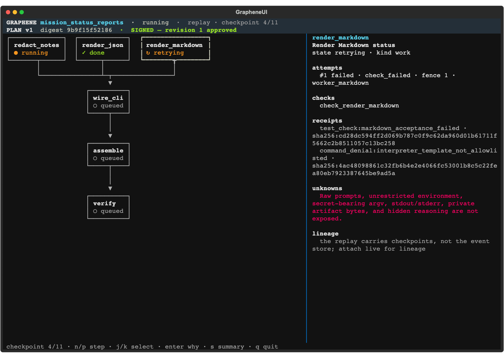

Terminal-native workflow control plane
Draw the route. Sign the map. Watch your agents keep to it.
Graphene turns a coding goal into a policy-bounded task graph. Inspect or revise the route, approve its exact digest, and follow the signed mission task by task before deciding what happens to its exact candidate.
One signed mission
The map is the contract.
Follow one verified local Taskmaster fixture through Plan, Sign, Run, Recover and Prove. State changes, retries and evidence never rewrite its approved six-task topology.
Every task is done. Summary and why expose outcomes, receipts, files and known unknowns. The exact registered candidate waits outside the DAG for a separate approve/reject decision.
- Graphene truth source
- cc50a62a9a3f6b521d5a157b0942ca4e722fbe57
- Captured mission
- mission_start_5541d5c504fa7f8409087233
- Base SHA
- e5995606e3cdcf37737dc613e2f391e229726358
- Plan revision
- 1
- Canonical plan digest
- cddcda3f19194df275e7be75c9fe2ba9b087fa4ebfd69ed7893b97754040bf8c
Goal + policy boundary
RESULT awaiting_decision · final_result_be3df9ce…Exact candidate · separate approve/reject decision
approve → may create an isolated local result · reject → no commit · nothing is pushed
approved plan dependencies derived lineage · files, attempts and workers are never plan nodes
Captured MCP fixture: max concurrency 2; the signer was a script and approval truth was server_derived, not human-attested. The final decision is a separate CLI path.
Read this mission as text
At the recorded final state all six tasks are done. redact_notes, render_json and render_markdown are roots. wire_cli depends on all three. assemble_candidate depends on all three roots plus wire_cli; verify_candidate depends on assembly. Markdown attempt 1 at fence 1 failed its acceptance check; the same task returned through retrying and ready, then passed as attempt 2 at fence 2. The mission is awaiting_result; bundle final_result_be3df9ce374fa025d93f452e088d5803 is awaiting_decision outside the task graph. The recorded why status_report/cli.py query establishes target, producer, accepted inputs, assembly and verification; approval remains unknown.
Terminal + MCP
Mission control, in your terminal.

graphene ui --replay taskmaster capture at Graphene cc50a62. This is the fixed verified replay, a different fixture from the MCP mission above.graphene ui renders the signed DAG read-only. Its banner identifies the mission, plan revision, digest and signed state. Select a node for attempts, checks, receipts and lineage, or open summary and why. A separate scripted-fixture capture proves live following from the same store. Neither path is a live model mission.
MCP connection
graphene-mcp exposes the goal prompt and six tools for plan, digest approval, execution, status, summary and why. Claude Code discovery was captured; the official MCP client drove the fixture, with a script—not a person—signing. Codex and Gemini CLI are documented, not driven. MCP does not make the final result decision.
Fixed replay · zero credentials · no live agent · no new work
git clone https://github.com/Alex-lop/Graphene.git && cd Graphene
uv sync --frozen
uv run --frozen graphene ui --replay taskmasterProof
Proven paths. Explicit limits.
Graphene publishes the contract behind every public claim. These labels describe the current release—not a roadmap, deployment or benchmark.
- Verified locally
- Fixed replay · terminal UI · MCP goal loop
- Verified live · 2026-08-23
- Two bounded Gemini workers · evidence-aware retry; operator-delegated approval and an intentionally injected check failure
- Not supported in this release
- Arbitrary repositories · visual workflow editing · autonomous push or deploy
- Not deployed
- Cloud Run · real Firestore
- Not proven
- Live Docker smoke · comparative benchmark
- Not captured / not proven
- Person-signed MCP take · submission film
Read the pinned proof contract, proof notes, and known limitations.